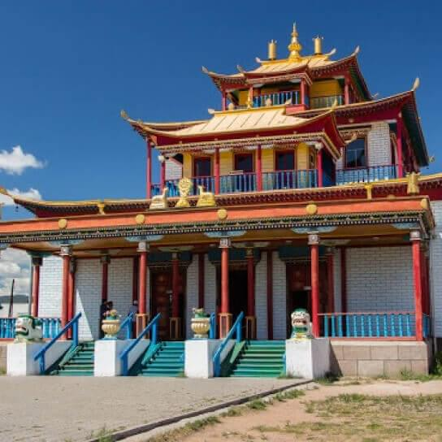
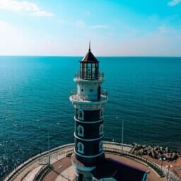
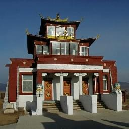
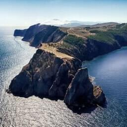
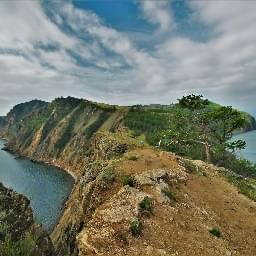
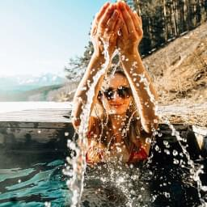
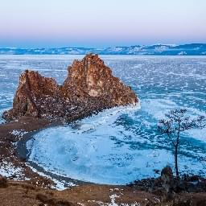

Популярные предложения

Эко-отель «Байкальское шале»
Отель расположен в одном из самых живописных мест на Байкале в селе Максимиха. Вокруг спокойствие и тишина, пьянящий воздух тайги и бриз Байкала наполнят вас энергией, а гостеприимство отеля оставят в сердце только положительные эмоции.
Стоимость: от 7500 руб.

Отель «Белая Карета»
Отель находится в живописной местности в центре села Горячинск, в 500 метрах от берега. Здесь Вы можете отдохнуть в современных и комфортных условиях. Номерной фонд комплекса составляют 28 номеров различной категории.
Стоимость: от 3200 руб.

Парк-отель «Сагаан-Морин»
Отель находится в селе Сухая, включает в себя 7 абсолютно новых корпусов. В них размещается 111 номеров, банкетный зал и клиника традиционной медицины «Бодхи». Парк-отель «Сагаан Морин» работает круглый год!
Стоимость: от 3500 руб.

Парк-отель «Байкальская Ривьера»
Отель расположен на южной окраине села Гремячинск и непосредственно граничит с девственным лесом и высоким берегом реки Кика. До берега Байкала пять минут пешего хода. Территория облагорожена, ограждена, установлены беседки, сохранены участки лесной растительности.
Стоимость: от 3000 руб.
- 
Экскурсия в Иволгинский дацан
Экскурсия рассказывает об особенностях буддийского культа, распространении ламаизма на территории Бурятии, изобразительных и архитектурных особенностях буддийских дацанов, о персоне Хамбо-Ламы Даши-Доржо Итигэлове, нетленное тело которого, находится в дацане.
Продолжительность: 4 часа
Стоимость: от 500 руб.

Обзорная экскурсия по Улан-Удэ
В ходе экскурсии вы познакомитесь с историей города Улан-Удэ с момента основания до наших дней, узнаете интересные факты и знаменательные события, увидите достопримечательности, раскрывающие многогранный облик города.
Продолжительность: 3 — 5 часов
Стоимость: от 400 руб.
Экскурсия на озеро Байкал (в Горячинск)
Во время экскурсии, вы ознакомитесь с достопримечательностями восточного побережья Байкала, по пути следования вы послушаете общую информацию о Байкале, о его истории и легендах.
Продолжительность: 6 — 7 часов
Стоимость: от 1500 руб.
Однодневный тур в Ацагат
В экскурсионную программу входит посещение дацана, знакомство с историей старинного Ацагатского дацана, который основан в 1824 году и построен по инициативе Цаннид-Хамбо Агвана Доржиева в честь бурхана Цаган Дара-эхэ (Белой Тары).
Продолжительность: 5 — 6 часов
Стоимость: от 2000 руб.

Прогулка по Чивыркуйскому заливу
Чивыркуйский залив — один из самых уютных и живописных уголков Байкала. Он углублен в сушу между материком и полуостровом Святой Нос на 26 км, при ширине от 6 до 12 км.
Продолжительность: 10 — 12 часов
Стоимость: от 4200 руб.
Прогулка на остров Ольхон
Одним из неповторимых мест Байкала является остров Ольхон. Это самый большой остров среди бескрайнего Байкала, Ольхон — окруженный множеством легенд и загадок.
Продолжительность: 10 часов
Стоимость: от 4500 руб.
Тур на Байкал «Легенды Байкала»
Тур для тех, кто хочет оторваться от городской суеты и погрузиться в мир удивительной, чистой и яркой заповедной природы! Если Вы впервые приехали на Байкал, то этот экскурсионный тур специально для Вас!
Продолжительность: 8 дней/7 ночей
Стоимость: от 56000 руб.

Вокруг Баргузинской долины
Специально для вас был разработат тур-знакомство с достопримечательностями Баргузиснкой долины, который интересен своими — историко-культурными ценностями.
Продолжительность: 2 дня/1 ночь
Стоимость: от 6500 руб.
- 
Однодневный тур на Чивыркуйский залив
Тур стартует из Улан-Удэ. Сбор группы и трансфер на комфортабельном автобусе до Усть-Баргузина. Далее на автомобилях УАЗ отправляемся в Чивыркуйский залив, чтобы увидеть сказочные картины зимнего Байкала в Забайкальском национальном парке.
Продолжительность: 10 — 12 часов
Стоимость: от 4000 руб.

Однодневный тур на остров Ольхон
Тур стартует из Улан-Удэ. Сбор группы и трансфер на комфортабельном автобусе до села Турка. Посадка на судно с воздушной подушкой «Хивус» или в автомобиль УАЗ. Переход по льду до острова Ольхон.
Продолжительность: 10 — 12 часов
Стоимость: от 5000 руб.

Тур «Чивыркуйская сказка»
Тур стартует из Улан-Удэ. Сбор группы и трансфер на автомобиле до Забайкальского национального парка, в бухту Катунь. C Усть-Баргузина через Чивыркуйский перешеек до Чивыркуйского залива (на автомобиле УАЗ)
Продолжительность: 3 дня/2 ночи
Стоимость: от 20000 руб.
Тур «Кристальный лед Байкала»
Зимний Байкал притягивает туристов особенной, сказочной красотой: заснеженные горные хребты, сверкающий на солнце прозрачный лед, гроты, замысловатые ледяные скульптуры и изваяния, созданные самой природой.
Продолжительность: 4 дня/3 ночи
Стоимость: от 30000 руб.